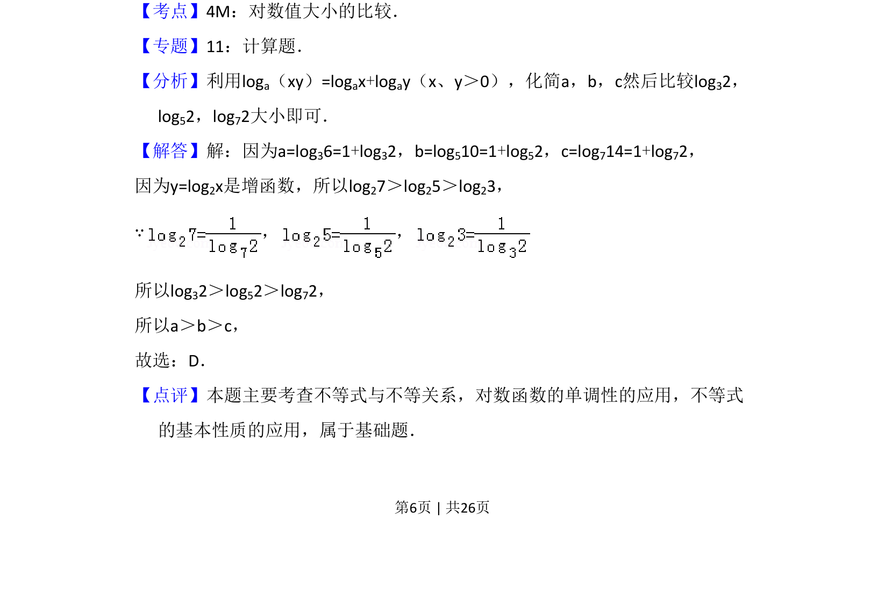

考点：对数值大小比较 对数运算 对数函数单调性
通过将a、b、c化为1+logₙ2形式，利用对数函数单调性比较大小。

📄 原 PDF 第 6 页：
素材/真题/吉林/2008-2024·（吉林）数学高考真题/2013年高考数学试卷（理）（新课标Ⅱ）（解析卷）.pdf
8．（5分）设a=log36，b=log510，c=log714，则（ ） A．c＞b＞a B．b＞c＞a C．a＞c＞b D．a＞b＞c
【考点】4M：对数值大小的比较．菁优网版权所有 【专题】11：计算题． 【分析】利用loga（xy）=logax+logay（x、y＞0），化简a，b，c然后比较log32， log52，log72大小即可． 【解答】解：因为a=log36=1+log32，b=log510=1+log52，c=log714=1+log72， 因为y=log2x是增函数，所以log27＞log25＞log23， ∵， ， 所以log32＞log52＞log72， 所以a＞b＞c， 故选：D． 【点评】本题主要考查不等式与不等关系，对数函数的单调性的应用，不等式 的基本性质的应用，属于基础题．